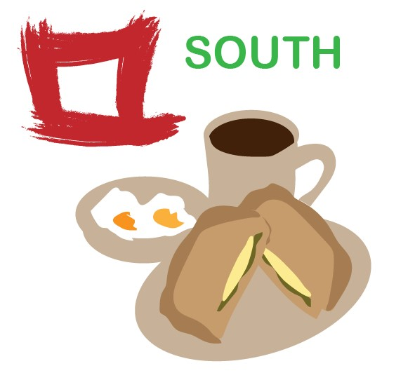

Telegram Sticker
This sticker design is an assignment given to me for my module UI/UX Design for Apps. We were task to design stickers that students and lecturers in Republic Polytechnic can relate to.

This sticker design is an assignment given to me for my module UI/UX Design for Apps. We were task to design stickers that students and lecturers in Republic Polytechnic can relate to.
This sticker is inspired by the south food court in Republic Polytechnic. For my design, I drew out a Kaya toast set, a popular breakfast item sold in the canteen. Next, I drew out the Koufu logo and added the text "SOUTH". This sticker could be used as a fun way for students or lecturer to use when they ask their friend where to eat during break time.
Illustrator | Telegram